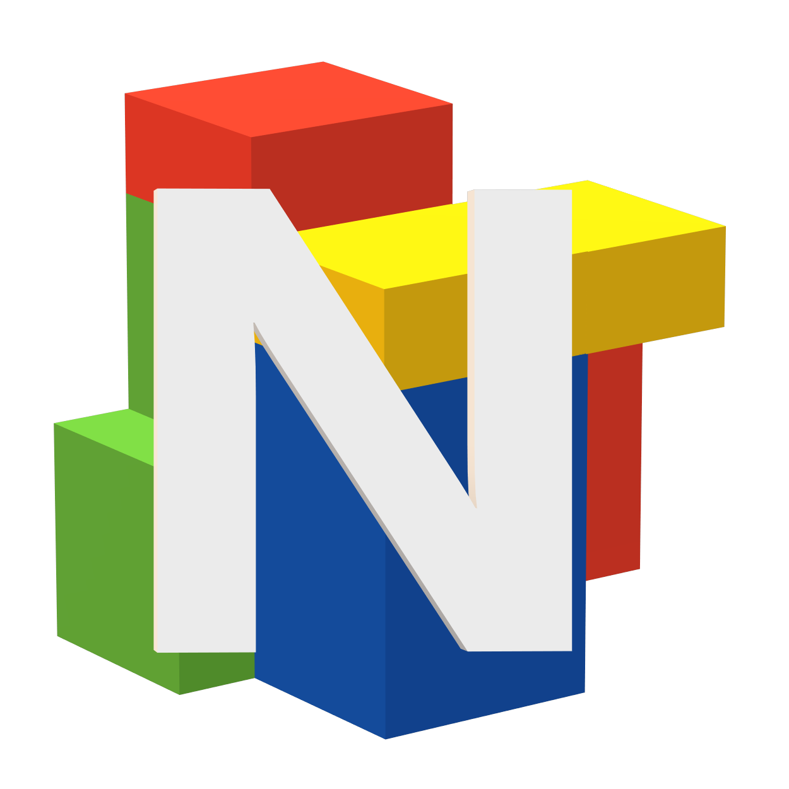

AboutNebrix is an active development, community focused platform where anyone can create, share, and play games! Our goal is to give developers the tools they need to bring their ideas to life, and share their games with the world all on one platform, completely free of charge. Whether you're an experienced programmer or just getting started, Nebrix is designed to make game creation more accessible.
With Nebrix Studio, you can build everything from simple Obbys to massive 3D worlds. Nebrix Studio provides a wide variety of tools including customizable shaders, Visual Scene editor, Lua scripting editor, a Robust Physics engine, and so much more. We bring all of these tools together in a single, easy-to-use application that both beginners and experienced developers can understand.
With Nebrix Player, you can explore a vast community that continues to grow every day. Join your friends in multiplayer sessions with a single click, no port forwarding, no IP addresses, no complicated setup. Just open the game page, tell your friends to click play and you're in the same server just like that! The Player client handles networking automatically, allowing you to join friends instantly and focus on playing. Leave reviews, submit suggestions, and provide feedback directly to developers through the website.
Nebrix is built around three core pillars: creativity, accessibility, and community. We believe anyone can learn to create games with the right tools, and Nebrix is the perfect place to start. No starting from scratch, no server setups, no complex multiplayer setup. Just you and your ideas, and a platform that helps you turn them into reality. We combine the complex and simple so everyone can make games together.
At its core, Nebrix is built on a foundation of raw performance and broad accessibility. The engine is written in modern C++20 with OpenGL 4.6 with the goal of introducing Vulkan in the future. This allows Nebrix to run efficiently on older hardware while taking advantage of modern systems.
For Nebrix Studio game development we chose Lua 5.4 as our primary scripting language because it is lightweight, fast, and approachable for beginners. In the future we aim to also add C# as it is optimized and many developers have experience with this language. We use a customized Lua for Nebrix to add more features to move and manipulate objects giving more control over game development yet simple and easy to understand for beginners.
For Nebrix Multiplayer we use Linux Ubuntu servers running a custom, lightweight C++ dedicated server. We use ENet on top of UDP to provide fast, low-latency multiplayer networking. For the Chat Service we use TCP networking instead to ensure your message delivers reliably and securely. We also have a non-AI custom chat filter to ensure no one can share sensitive, personal, or harmful messages to others.
The all in one development environment where you build your games and share them with the world. Featuring an intuitive visual scene editor with simple and easy tools that both beginners and experienced developers can understand; a powerful Lua script editor with syntax highlighting, autocomplete, and integrated debugging; a terrain editor for creating vast outdoor environments; an advanced UI designer; and seamless one click publishing button that uploads your game straight to the Nebrix platform for instant distribution to players worldwide. Everything you need, all in one place, completely free.
Discover and play games created by the community in a fast, lightweight, multiplayer client. Browse libraries of games and have endless hours of fun. Join friends instantly with a single click of a button and have a built in secure chat right in your Player! Review and send feedback straight to the developers of your favourite game! Build a library of your most favourite games. With cloud saves synced across all your devices, you can start playing on your desktop and continue right where you left off on your laptop. Experience the creativity of developers from around the globe, all within a safe, humanly moderated environment suitable for all ages.
We prioritize the community in everything we do. Every major feature decision goes through a public voting process where community members can propose ideas, discuss them in dedicated forums, and cast their votes to influence the development roadmap. Our moderation team is 100% human with no automated takedowns! Every report is reviewed by trained human moderators, ensuring fair, consistent, and transparent enforcement of our community guidelines. We maintain an active Discord server where developers help each other solve bugs, share resources, and form teams. The Nebrix community isn't just users of a platform; they are co-creators of the platform itself.
We saw a clear gap between experienced developers struggling with expensive servers and complex distribution, while beginners faced months of learning and costly tools just to share a simple game. There was no easy bridge between them. We created Nebrix to be that bridge. A single, free platform where anyone, from first time creators to professional game developers, can build and publish games with one click, and reach a global audience in seconds without ever touching a server or paying a cent.
After two months of intensive development, we completed the first functional version of Nebrix Studio. This early build featured the core rendering engine with OpenGL 4.6, basic 3D primitive rendering, a basic scene hierarchy, a simple physics integration with collision detection, and a basic playable character controller with movement, jumping, and camera following. With the tools developed at this time we were able to create a simple obstacle course.
We deployed the first generation of the Nebrix server infrastructure on Linux Ubuntu. This milestone included the ability to save and load games, account creation via the website. This version also improved performance significantly in Nebrix Studio with the new feature of Culling and better rendering optimizations. This version also gave SVG icons on the explorer tab. This was also the first version with Lua scripting support with ~20 custom functions.
In May 2026, we released the first version of Nebrix with fully functional multiplayer support. For the object translations we chose UDP networking for its fast and low latency speed, although for the Chat system we chose TCP networking instead for secure, and reliable messages. At this version we also introduced the custom no-AI chat filter to ensure no one can send personal information or harmful messages between others.
Want to follow Nebrix's development? Join our Discord to get updates, vote for new features, share feedback, and connect with other members of the community. We're actively building the platform and welcome anyone interested in game development or the future of Nebrix.